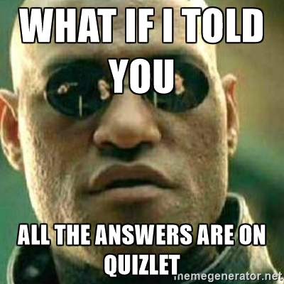
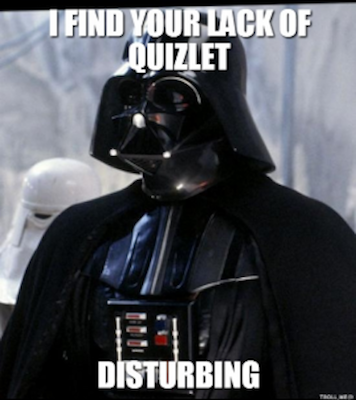
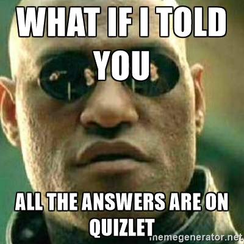
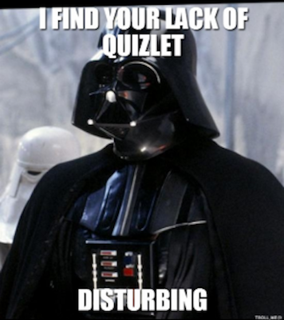

Vocabulary Flashcards on Quizlet
There are flashcard sets available on Quizlet for our textbook.
Here is our APSci study set.
Individual hyperlinks for the module pages:
 There are flashcard sets available on Quizlet for our textbook.
Individual hyperlinks for the module pages:
 